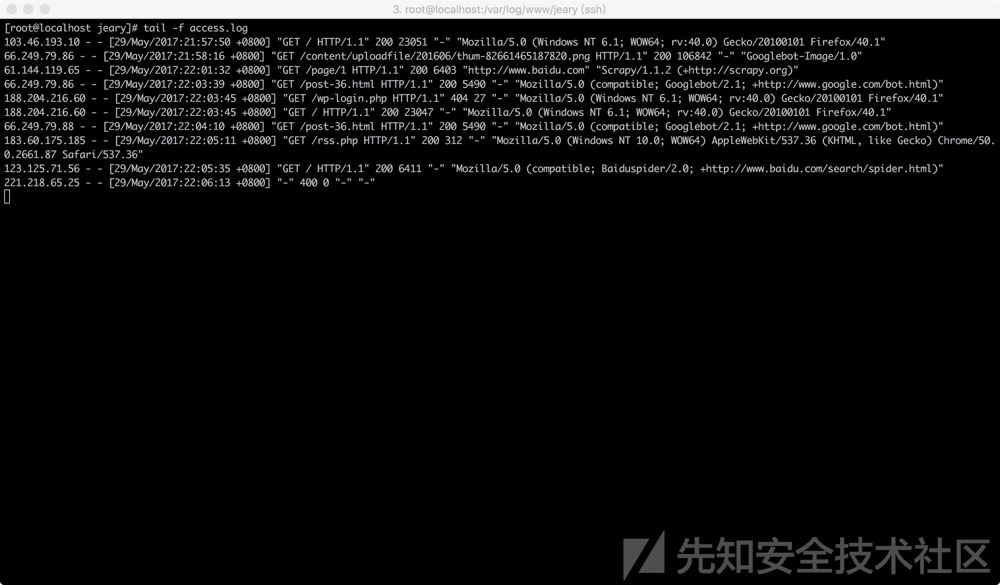
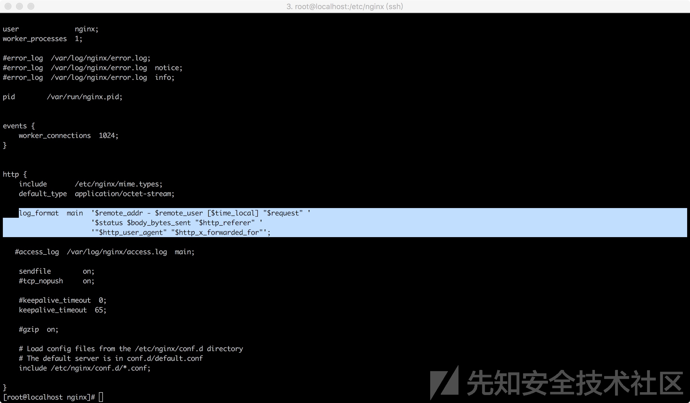
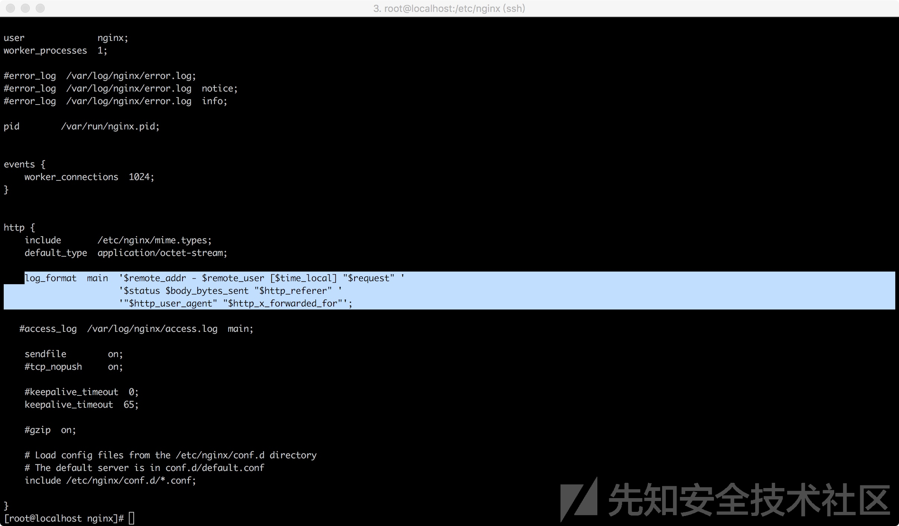
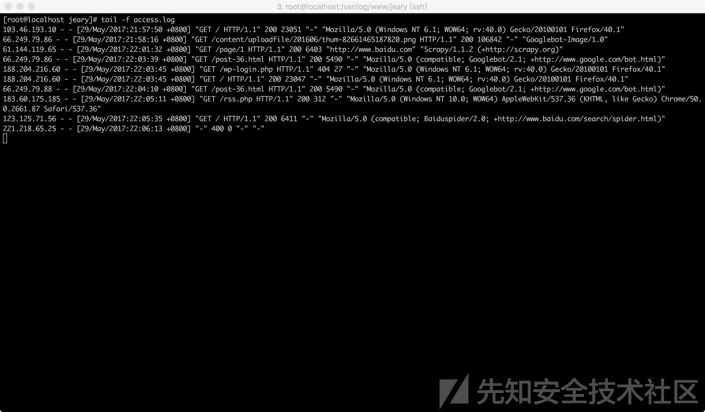

常见系统日志
- 日志
- 多种系统
- Nginx
- 日志举例
- 
- 其中一条
61.144.119.65 - - [29/May/2017:22:01:32 +0800] "GET /page/1 HTTP/1.1" 200 6403 "http://www.baidu.com" "Scrapy/1.1.2 (+http://scrapy.org)"
- 其中一条
- 对应nginx配置
- 
- 日志格式
$remote_addr - $remote_user [$time_local] "$request" '$status $body_bytes_sent "$http_referer" '$http_user_agent" "$http_x_forwarded_for"';- 翻译成中文
远程IP - 远程用户 服务器时间 请求主体 响应状态 响应体大小 请求来源 客户端信息 客户端代理IP
- 日志格式
- 
- 
- 日志举例
- Nginx
- 多种系统
黑客攻击相关日志
- 背景
- 站在攻击者的角度，攻击者对网站进行渗透时，其中包含大量的扫描请求和执行恶意操作的请求
- 这两者在日志中都有各自的特征
- 扫描请求会访问大量不存在的地址
- 日志中的体现：大量的响应状态码为404
- 不同的恶意请求都有各自相应的特征
- 扫描请求会访问大量不存在的地址
- 这两者在日志中都有各自的特征
- 站在攻击者的角度，攻击者对网站进行渗透时，其中包含大量的扫描请求和执行恶意操作的请求
- 举例
- 恶意请求
- 当有人对服务器进行SQL注入漏洞探测时
- 以
select为关键字进行过滤 - 对策
- 加上时间条件，状态码等条件，能查询到最近可能成功的SQL注入攻击
- 注：
- 实际情况中，会有很多噪声数据
- 仅仅只依靠状态码来判断攻击是否成功是不可行的
- 因为很多时候请求的确成功了，但并不能代表攻击也成功了
- 举例
- 请求一个静态页面或者图片，会产生这样一个请求
/logo.png?attack=test';select/**/1/**/from/**/1- 请求状态码为200，但是此注入攻击并没有得到执行
- 请求一个静态页面或者图片，会产生这样一个请求
- 举例
- 因为很多时候请求的确成功了，但并不能代表攻击也成功了
- 仅仅只依靠状态码来判断攻击是否成功是不可行的
- 实际情况中，会有很多噪声数据
- 注：
- 加上时间条件，状态码等条件，能查询到最近可能成功的SQL注入攻击
- 以
- 当有人对服务器进行SQL注入漏洞探测时
- 恶意请求